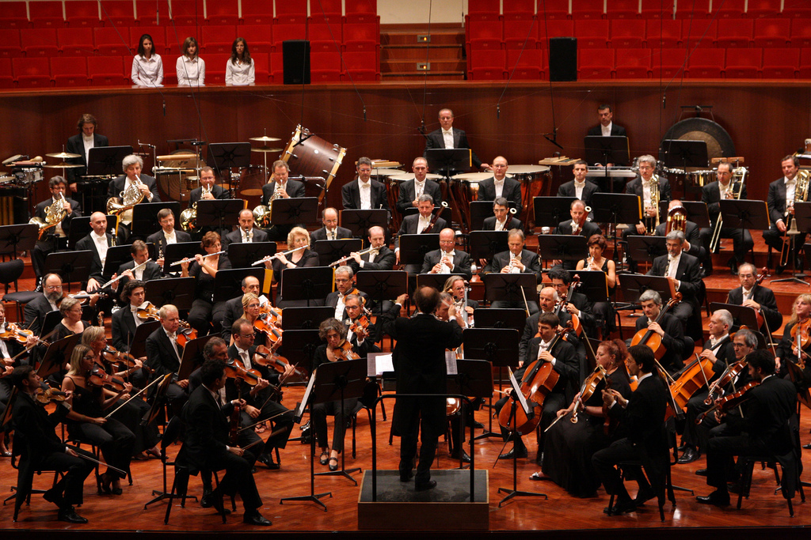
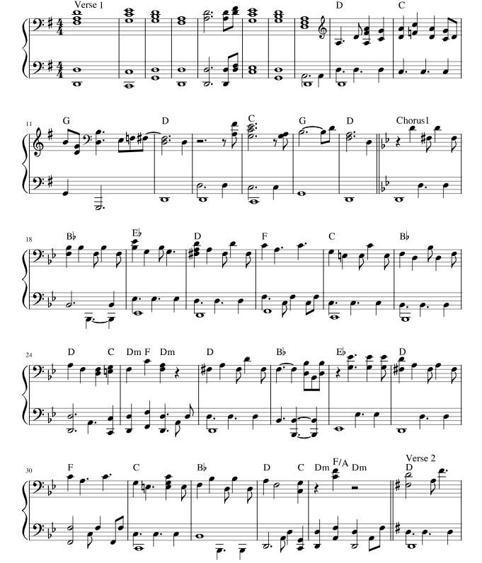

General Overview
The purpose of this website is to try and accentuate the importance of music and music theory for the general public through the basics of orchestration. Before doing this, we'll address music theory and orchestration.
The Orchestra/Orchestration [1]

In general terms, Orchestras are groups of musicians playing instruments together. The first orchestras formed more than 400 years ago. For composers and audiences alike, it was love at first sound. Orchestras most often play classical, instrumental music and you can quickly identify them by their characteristic mix of instruments from four main instrument families, which we'll build onto later. When orchestras are really large, they are called symphony orchestras.
Orchestra musicians practice, listen carefully, and cooperate to make great music. Everyone has an important role to play, but there are a few people with extra responsibilities during a performance. For example, The conductor is the person who stands on the podium and leads the orchestra. Conductors guide the musicians on when and how fast and loud to play. The concertmaster, usually the lead violin player, is kind of like an assistant to the conductor. Concertmasters walk out on stage before the conductor appears and take a bow before sitting down and giving the signal for the orchestra to tune. The lead oboe player plays the “A” note that all the other musicians tune (adjust) their instruments to match. This step, which sounds a little crazy for a minute, ensures that all the instruments sound perfect together when the music starts. The soloist can be an orchestra member or a guest musician who performs music that features one instrument over all the others; soloists play their instruments with extraordinary skill.
Music Theory [2]

Music theory is the foundation on which all music is built. It's the systematic study of the elements and structures that make up music. Just as a writer must understand grammar and syntax to convey ideas effectively, musicians need a grasp of music theory to communicate through music. Throughout history, prominent musicians and theorists like Pythagoras have contributed to the evolution of music theory. Some essential components of music theory are:
- Notes and Scales: Music begins with the organization of sounds into notes. These notes follow specific patterns known as scales.
- Chords: Chords are a group of notes played simultaneously.
- Notation: Musicians use a system of notation, such as sheet music or tablature, to communicate their music visually.
Musicians who can read sheet music fluently have a distinct advantage in rehearsals and live performances. Sight-reading is a skill honed through the study of music theory. For example, a musician with enough practice could read the musical sheet on the right in a matter of minutes if not seconds.
Ready to start learning more about speific instruments and what part they play in the orchestra? Click here!
References
- The Kennedy Center, "Guide to the Orchestra".
- University of Miami News, "What is Music Theory and How Can It Enhance Your Career Prospects in the Industry?".